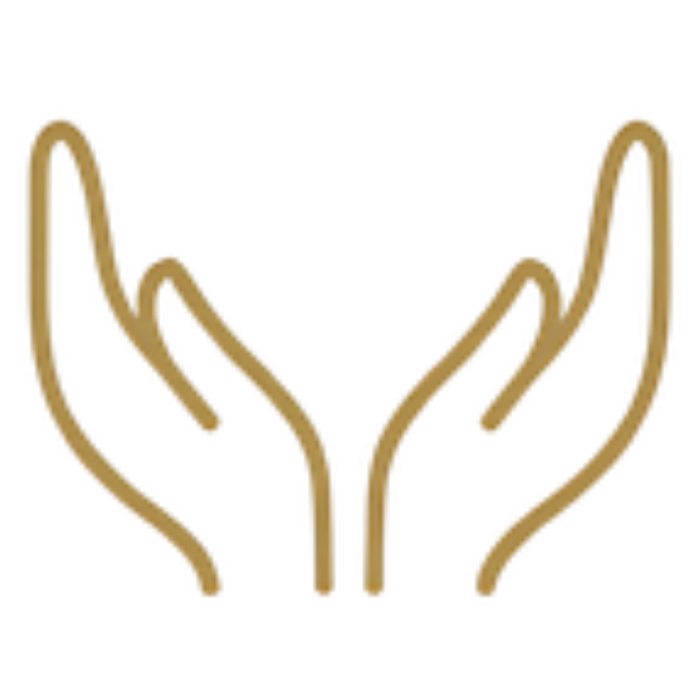
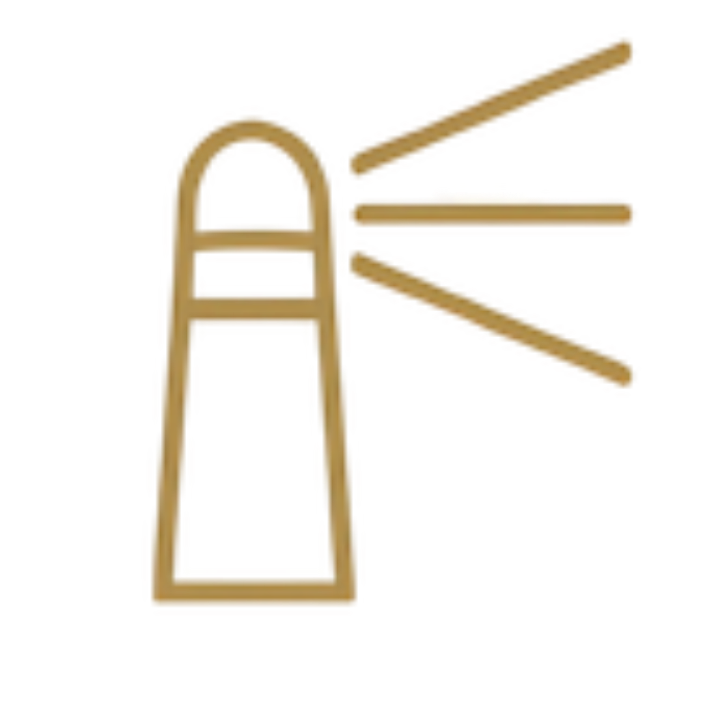
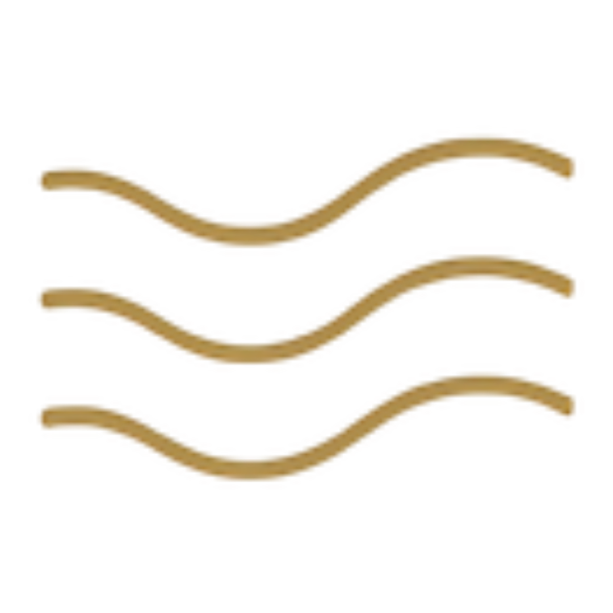

The Holder
Give to stay connected
You reach first, you hold everyone, and quietly wonder why no one ever thinks to hold you. With touch, you give easily and receive awkwardly, bracing the second a hand lands without you earning it.
You'll recognise it when
- Someone asks what you need and you go blank.
- You initiated every touch today.
"I want to be held without having to earn it."
The Flame
Dim to stay digestible
There is fire in you. You learned to turn it down to stay wanted, and now you are quietly starving to be met at full heat. With touch, you only let it in once you have dimmed for it.
You'll recognise it when
- You've got good at enjoying what arrives instead of asking for what you actually want.
- Your laugh sometimes gets smaller halfway through.
"I want to be wanted without shrinking."
The Armour
Contain to stay safe
You stay composed and in control, because softness once cost you too much. With touch, you tense a beat before contact, and would rather give on your terms than be caught receiving.
You'll recognise it when
- Compliments slide off. "You look amazing." "Thank you, yes." Already gone.
- Someone tries to get close and you suddenly find a reason to be busy.
"I want to soften without collapsing."

The Signal
Curate to stay legible
You stay readable. You translate and filter yourself so well that no one ever meets the raw, unedited you. With touch, yours is graceful and curated, and you disconnect a beat before it can sink in.
You'll recognise it when
- You've already worked out how to say it before you say it.
- Being truly received feels both wanted and slightly terrifying.
"I want to be met in the full mess of me."

The Current
Express to stay met
You bring the aliveness, you keep the charge even when no one meets you there, and being the source is quietly exhausting you. With touch, you give generously instead of letting yourself be received.
You'll recognise it when
- You feel the exact moment the energy drops, and instinctively pick it back up.
- Relief. That's the word for when someone else holds the current.
"I want to be received without leading it all."